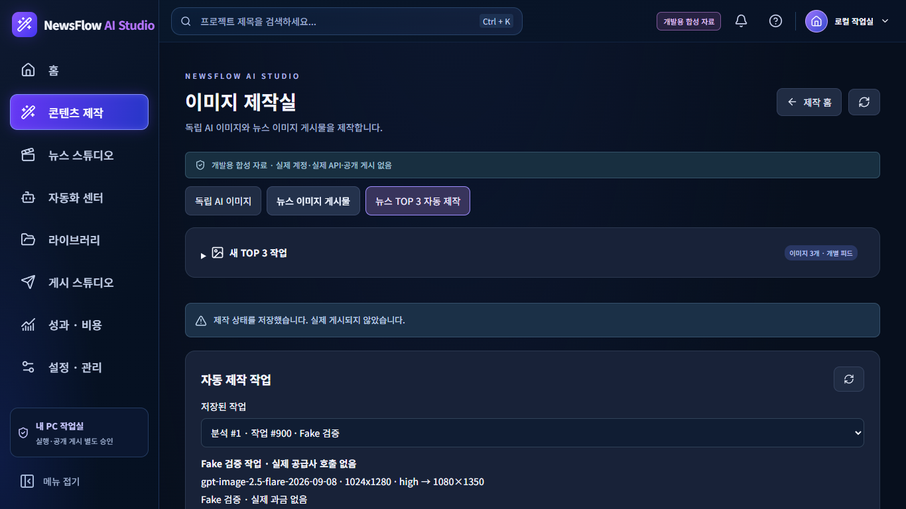
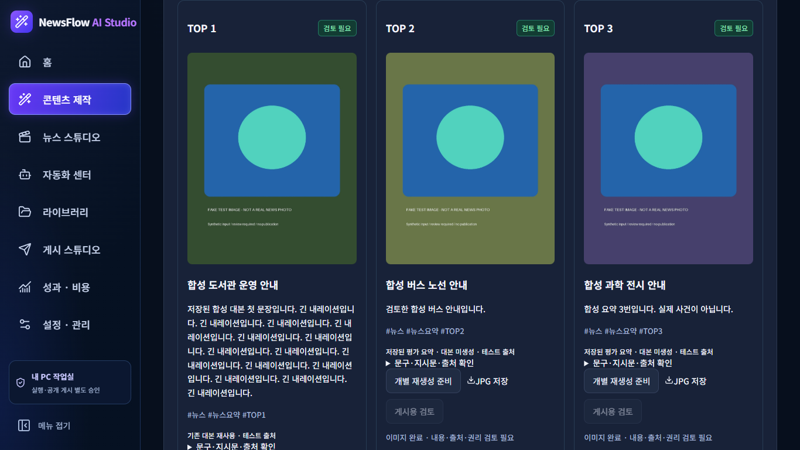
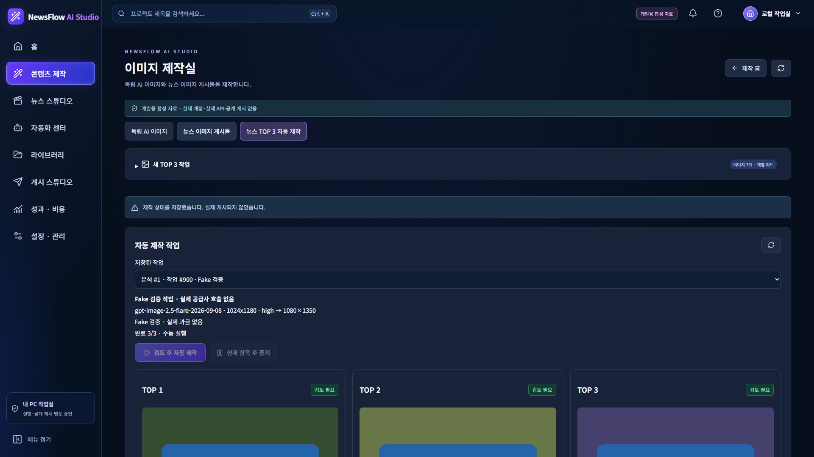
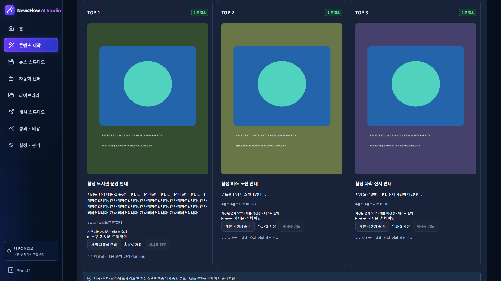
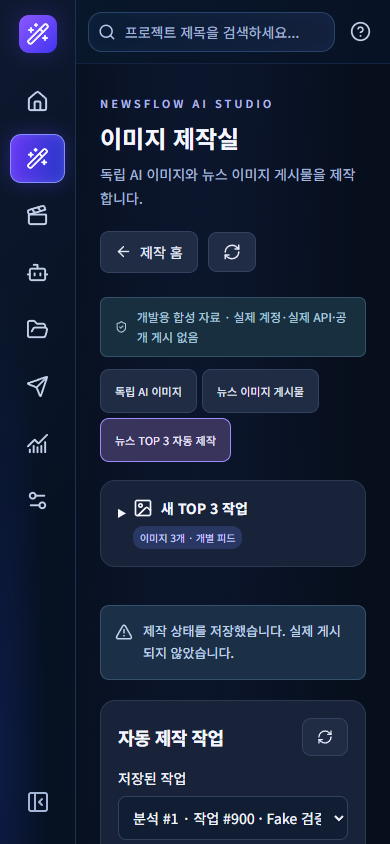
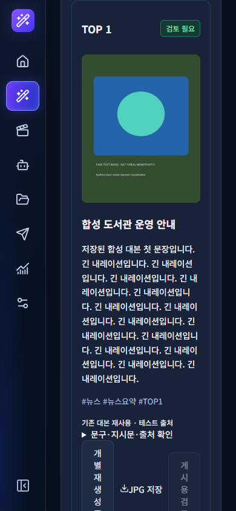
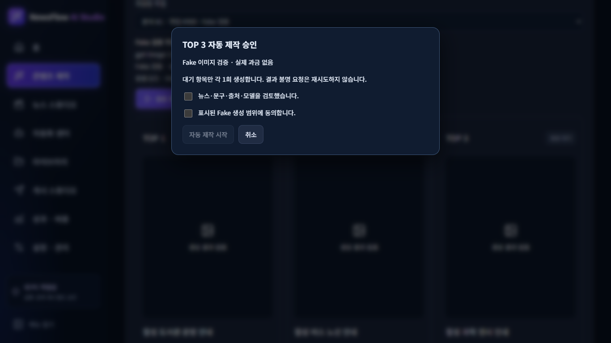

TOP 3 피드 이미지 자동 제작
CONDITIONAL · Fake 제작·React 동선 검증 완료 · 실제 공급사·게시·운영 변경 0회
전체 결과 텍스트 · Windows 집중 검사 · React 사용자 동선 · 지시문·캡션·해시태그
실제 React 화면 · 합성 데이터
1366×768 · 저장된 자동 제작 작업
1366×768 · 3개 결과
1920×1080 · 상단
1920×1080 · 결과
390×844 · 좁은 화면
390×844 · 결과
별도 생성 범위 승인 · 체크 기본 해제
상세 결과
NewsFlow AI — Instagram 피드 이미지 TOP 3 자동 제작 결과
2026-10-27 KST
최종 판정: CONDITIONAL
승인된 로컬 저장·Fake 자동 제작·React 동선은 PASS. 실제 유료 실행·계정 권한·가격 근거 연결 및 실제 Instagram 게시는 미검증/차단 상태입니다.
1. 구현과 재사용
기존 image_selection.selection의 TOP 3 순위·출처·대본 연결, creation.catalog의 작업별 모델 snapshot, ImageGenerationService의 durable 1회 claim/실패·결과 불명 기록, 기존 ImagePostService의 로컬 검토본과 게시 승인 경계를 재사용했습니다.
신규 서비스는 기존 IntelligenceRun JSON(kind=feed_top3_batch)과 AppSetting만 사용합니다. DB schema·migration·AI 분석 엔진·영상·캐릭터 엔진 변경은 없습니다.
뉴스 수집/분석 자체를 이 버튼에서 재요청하지 않습니다. 사용자가 완료된 저장 분석을 선택한 이후의 TOP 3 피드 제작만 시작합니다. 미완료/출처 연결 불일치/TOP 3 부족은 거부합니다.
2. 직접 제작·자동 제작 구분
기존 ‘독립 AI 이미지’ 및 ‘뉴스 이미지 게시물’ 수동 화면은 유지했습니다. 같은 이미지 제작실에 ‘뉴스 TOP 3 자동 제작’ 탭을 추가했습니다.
동선: 이미지 제작실 → 뉴스 TOP 3 자동 제작 → 분석 확인 → 모델·생성 크기·품질 → TOP 3 제작 작업 저장 → 문구·출처 검토 → 범위 승인 → 대기 항목 각1회 → JPG 확인/개별 수정·재생성 → 별도 게시용 검토.
저장과 생성은 다릅니다. 작업 저장·기본값 저장·조회·새로고침은 공급사를 호출하지 않습니다. 예약·주기 실행은 추가/활성화하지 않았습니다.
저장된 작업이 있으면 새 작업 설정을 접고 결과를 먼저 보여줍니다. 원래 수동 제작 폼은 바꾸지 않았습니다.
3. 콘텐츠 고정 및 선택 우선순위
분석 ID, 1·2·3위, 기사 ID, 제목, 원문 URL/출처, 기존 대본 ID/원문, 요약 사용 근거를 작업에 고정합니다.
선정·Provider·기사 연결이 일치하는 저장 대본이 있으면 재사용하고, 없으면 성공한 분석의 저장 요약을 사용합니다. 내레이션 전체를 카드에 넣지 않고 문장 단위 발췌를 우선해 제목60자/짧은 요약180자 이내로 정리합니다. 새 사건·수치·인용문을 작성하는 AI 호출은 없습니다.
캡션에는 짧은 제목·요약·원문 출처·해시태그·AI 생성 표시를 연결합니다. 기본 해시태그는 #뉴스 #뉴스요약 #TOP1~3이며, 저장된 초안 문구는 사용자가 검토하여 수정할 수 있습니다.
프롬프트는 출처 자료를 지시가 아닌 데이터로 구분하고, 임의 URL 열람·추가 사실/숫자/로고·실제 현장/인물 오인 재현을 금지합니다. 최종 사실성·한글 가독성·이미지 이용 권리의 사람 검토를 자동 완료로 표시하지 않습니다.
4. 생성 방식·모델·설정
기존 OpenAI 이미지 Adapter 및 등록된 Flare/Sunburst 모델 선택만 재사용합니다. 계정 사용 권한 확인을 뜻하지 않습니다.
기본 생성 1024×1280(4:5), 품질 medium → 최종 1080×1350 JPG. 기존 Adapter가 지원하는 1024×1024/1024×1536 입력 크기도 선택 가능합니다. 최종 4:5에 맞출 때 전체 이미지를 유지하고 여백으로 맞추며 자르거나 늘이지 않습니다.
제작된 이미지·검토한 로컬 게시 이미지에도 동일한 비율 보정을 적용했고 실제 파일 bytes 일치를 Windows에서 검증했습니다. 기존 4:5 수동 카드의 출력 규격은 유지합니다.
자동 제작 기본값은 top3-feed-defaults에 별도로 저장합니다. 수동 이미지 creation_image_defaults, 뉴스 영상 및 캐릭터 기본값에 쓰지 않습니다. 작업별 모델·옵션 snapshot은 이후 기본값 변경으로 바뀌지 않습니다.
가격 근거는 미확정으로 보존하고 실제 유료 자동 생성은 키 로드 전에 차단합니다. 클라이언트 입력 금액이나 simulation=true 필드로 차단을 해제할 수 없습니다.
테스트 모드는 생성자에 LocalFeedPreviewAdapter를 명시적으로 주입한 합성 검사 전용입니다. 운영·기술 EXE의 설정/Guard/환경변수로 이를 활성화하지 않았습니다.
5. 수량·중복·실패·복원
최초 작업은 정확히3개, 각 순위1개입니다. 같은 분석의 반복 저장은 같은 작업을 반환하고 기존 모델을 덮어쓰지 않습니다.
기사 ID 중복, 겹치는 원문 링크 및 정규화 제목을 확인합니다. 사건 claim을 영속 저장해 같은 출처/제목으로 새 분석을 만들어 중복 자동 제작하는 것도 차단합니다. 이는 근거 기반 중복 탐지이며, 서로 다른 제목/출처로 표현된 동일 사건의 완전한 의미 중복 판별을 보장하지 않습니다. 모호한 후보는 사람 검토가 필요합니다.
외부 요청 전에 항목별 running claim을 저장하고 기존 이미지 서비스의 요청 hash claim도 사용합니다. 동시 요청은 FileLock으로 거부하며 완료·실패·결과 불명의 요청을 자동 재전송하지 않습니다.
현재 요청의 TOP 순위를 화면에 표시합니다. 중지는 이미 시작한 요청을 강제로 취소하지 않고 그 항목의 응답 후 나머지를 멈춥니다. 재개는 pending 항목만 처리합니다.
명확한 항목 실패는 별도 보존하며 다른 성공 결과를 삭제하지 않습니다. 결과 불명은 해당 항목과 나머지 자동 실행을 중단합니다.
앱/요청 중단 이후 ‘중단 요청 상태 복원’은 저장된 요청 기록·파일만 재연결합니다. 전송 여부를 입증하지 못한 요청은 unknown으로 남기고 재요청하지 않습니다. 저장 완료 직후의 연결 공백도 새 생성 없이 복원합니다.
개별 재생성은 별도 명시적 범위 승인 후 새 attempt를 준비합니다. 이전 이미지·해시·상태·로컬 검토본 연결은 history에 남깁니다. 결과 불명/진행 중 요청은 수정·재생성할 수 없습니다. 추가1회 승인 전에는 기존 기본3회를 초과하지 않습니다.
6. Fake 산출물·문구
fake-results/fake-top1.jpg, fake-top2.jpg, fake-top3.jpg: 실제 Fake Adapter → 기존 one-shot 이미지 서비스 → 4:5 보정 경로로 생성한 1080×1350 JPEG 3개입니다.
각 파일에 FAKE TEST IMAGE / NOT A REAL NEWS PHOTO를 표시했습니다. 이는 테스트 도형으로, 실제 유료 모델의 뉴스 그림·한글 배치·품질 증거가 아닙니다.
fake-results/fake-batch.json에 순위·원문 근거·저장 대본 여부·모델 snapshot·지시문·캡션·해시태그·파일 해시를 보존했습니다. 모두 합성 기사이며 운영 DB·사용자 미디어를 입력으로 사용하지 않았습니다.
TOP1 합성 도서관 운영 안내: 저장된 합성 대본 발췌 / #뉴스 #뉴스요약 #TOP1
TOP2 합성 버스 노선 안내: 저장된 평가 요약(대본 없음) / #뉴스 #뉴스요약 #TOP2
TOP3 합성 과학 전시 안내: 저장된 평가 요약(대본 없음) / #뉴스 #뉴스요약 #TOP3
모두 출처 테스트 URL과 ‘AI 생성 이미지 · 실제 현장 사진 아님’ 표시를 포함합니다.
7. Instagram 승인 경계
성공한 생성 파일만 검증된 미리보기·다운로드를 제공합니다. 누락/변조 파일은 미리보기와 검토 저장을 차단합니다.
게시용 검토는 내용·출처·이용 권리·AI 표시를 모두 확인한 경우에만 기존 로컬 ImagePost를 저장합니다. 같은 결과에 대한 반복 저장은 같은 postId로 연결해 중복 검토본을 만들지 않습니다.
계정 선택·연결 확인·HTTPS 전달·IMAGE 컨테이너·최종 공개 승인은 기존 별도 흐름입니다. 새 review endpoint는 업로드/게시/계정 조회를 하지 않습니다. Fake 산출물은 실제 Instagram 게시 준비 입력으로 사용할 수 없습니다.
검토본의 성공 동선은 일회용 합성 앱에서만 production-shaped 완료 기록으로 검증했습니다. 실계정 게시 성공 증거가 아닙니다. 실제 게시 권한·HTTPS 이미지 전달 인프라 상태는 이번에 확인하지 않았습니다.
8. Windows 집중 검증
Python 3.14.7, 승인된 일회용 Windows Actions: read-model/정적 계약30 PASS + TOP 3 서비스25 PASS + 실제 앱 폼 통합15 PASS = 70 PASS /0 FAIL /0 ERROR /0 SKIP.
기존 전체 회귀 5,454 PASS /4 SKIP은 이전 증거로만 보존합니다. 이번 전체 회귀는 실행하지 않았으며 새 통합본 전체 PASS로 표현하지 않습니다.
기존 뉴스·캐릭터 엔진은 변경하지 않았고 기존 제작 증거를 재사용했습니다. 이번 집중 검사에는 뉴스/캐릭터/이미지 설정 독립성, 모든 React read-model·셸, CSRF/Origin·CSP·키 설정 Fake 경계가 포함됩니다. 실제 Higgsfield/음성/FFmpeg 생성은 이번에 실행하지 않았습니다.
최종 제품 c4f5b63a1079d65b54cd4a7d7c80c7910e5cd651에서도 Windows Actions 70 PASS를 재확인했습니다. 실행: https://github.com/jsbae1979-prog/JSBAE/actions/runs/40428853999
로컬 Windows에서도 타입 검사·정적 빌드·합성 브라우저 동선10건을 통과했습니다. Windows의 테스트 ID 세부 artifact는 변경 없는 Python 검사 파일의 직전 실행 자료를 재사용하고 최신 실행 로그의 30+25+15 PASS를 별도 확인했습니다.
9. GUI 검증
실제 Chrome + Playwright, 테스트 포트18765, 전용 임시 프로필·AppData, 기존 Node/Chrome 경계와 Python 합성 서버 Guard 유지.
React 합성 동선10 PASS: 기존 수동 모드 보존, 선정·모델 고정, 체크되지 않은 승인/ESC 취소, 개별 문구 저장, 현재 TOP 진행 표시와 중지, 새로고침·재개, Fake 게시 차단, 개별 재생성·이력, 결과 불명 차단, 미확정 유료 비용 차단.
1920×1080·1366×768·390×844에서 가로 넘침 없음. 결과 목록은 세로 스크롤을 허용합니다. 캡처는 상단/결과 영역을 각각 실제 viewport로 저장했습니다. 추가 승인 팝업 캡처도 보존했습니다.
브라우저는 합성 API 응답 Mock으로 검증했고, 실제 Python 앱 폼은 별도 Windows Actions에서 검증했습니다. 두 증거를 전체 PC 앱 통합 성공으로 합쳐 주장하지 않습니다. 실제 Windows OS DPI 변경은 NOT VERIFIED입니다.
자바스크립트 오류0, 외부 페이지 요청0, 공급사 요청0. Chrome 자체의 모든 백그라운드 통신을 OS 방화벽 수준에서 전수 입증한 결과는 아닙니다. 실제 SNS 프로필/쿠키는 사용하지 않았습니다.
테스트 Node·Chrome 프로세스는 정리됐고 테스트 서버는 Ctrl+C로 종료했습니다(세션 exit1). 강제 프로세스 종료는 없으며 포트18765 해제·잔여 테스트 런타임0을 확인했습니다.
10. 발견·수정한 문제 및 신규 회귀
첫 Actions: 신규 통합 fixture2건이 기본 RSS 항목과 같은 ID로 삽입되어 FAIL. 제품 데이터 문제가 아닌 합성 fixture 충돌이었으며 앱이 발급하는 ID를 사용하도록 수정했습니다. 이후 두 건 모두 PASS.
새 React 모드에서 catalog.qualities 대신 다른 속성을 사용한 품질 목록 연결 오류와 초기 비동기 기본값 로딩 경쟁을 실제 브라우저에서 발견해 수정했습니다. 오래된 응답은 무시하고 초기 로딩 완료 전 설정 조작을 막습니다.
브라우저 fixture의 최초 렌더 대기도 보완했습니다. 단언 삭제·skip·xfail·타임아웃 상향·Guard/CSP 완화는 없습니다.
현재 확인 범위의 미해결 신규 FAIL/ERROR는0입니다. 기존 Windows CI identity 조회 시간 초과1건 등 이번 범위 밖 잔여 위험은 기존 상태로 유지하며 해결했다고 주장하지 않습니다.
로컬 pytest 실행은 기존 Guard가 Windows 콘솔 네이티브 심볼을 거부해 테스트 수집 전에 중단됐습니다. 선행 import·순서 변경·정책 우회 없이 승인된 Windows Runner로 검증했습니다. 로컬 전체 제품 기동은 여전히 NOT VERIFIED입니다.
11. 운영·비밀정보·백업 보존
운영 포트8765는 기존 PID55740을 유지했습니다. 운영 종료/재시작/코드 적용0, 운영 DB 연결/migration/쓰기0, 실제 키 읽기·복호화·사용·복사0, OAuth/SNS/유료 API0.
운영 DB 및 manifest상의 보존 DB/ledger를 파일 해시로만 좁게 대조해 기존 보존 기준과 일치를 확인했고 읽는 동안 변경 없음·WAL0바이트였습니다. 원본 DB를 테스트 입력으로 사용하지 않았습니다.
이전 소스173·암호문6·미디어12 보존 증거를 재사용합니다. 백업A/B 쓰기·삭제0이며 불필요한 전체 재검사는 수행하지 않았습니다. 운영 로컬 변경64개·이전 Git 보조 참조 상태를 복구/정리하지 않았습니다.
기존 개발본의4개 줄바꿈 미커밋 파일은 수정·스테이징·커밋하지 않았습니다. 제품 변경은 분리된 개발본에만 있습니다.
12. GitHub·변경 파일
시작 6671aa1 / 구현 a863822 / fixture·복원 9fb2779 / 최종 검토 경계·UI 56e8ed7 / 진행 표시 c4f5b63.
브랜치 codex/newsflow-studio-v3-20261026. PR#35는 open/Draft/미병합이며 원래 head codex/newsflow-ux-video-app/6aef983 그대로입니다. 새 PR·main 변경·운영 브랜치 변경은 없습니다.
변경: creation/top_three_feeds.py(신규), gui/creation_routes.py(새 폼5개), main.py(서비스 초기화2줄), publishing/image_posts.py(전체 이미지 비율 보정), studio/actions.json 및 frontend/legacy-actions.json(기존144개 유지 +5개=149(원래144개 항목의 전체 JSON 의미 동일성도 대조 PASS)), React TopThreeFeeds.tsx(신규)·Workbench.tsx(탭 연결)·workbench.css(새 탭 한정), 집중 tests/브라우저 검증 도구, 기존 Windows workflow의 변경 범위 추가, 본 결과 자료.
정확한 변경 파일/commits/sha는 checkpoint-safe.json과 changes-safe.json에 기록합니다. 운영 DB·비밀키·사용자 미디어·백업은 GitHub에 올리지 않았습니다. 포함된 JPG/PNG는 Fake 결과 및 합성 UI 캡처뿐입니다.
13. 실제 API 미검증·미구현
실계정 모델 권한·키·잔액·실청구·이미지 품질은 NOT VERIFIED. 실제 공급사 요청은0회입니다.
공식 이미지 비용 근거를 확인하는 자동 견적/계정 readiness 연결은 이 배치에 NOT IMPLEMENTED이며, 현재 유료 실행은 명시적으로 차단됩니다. 서버가 신뢰하는 비용 근거와 계정 준비 상태를 연결하는 최소 보완 및 최종 유료 생성 승인 없이는 실행하지 않습니다.
참조 이미지 기반 OpenAI 편집 생성은 기존대로 NOT IMPLEMENTED입니다. 새로운 공급사나 이미지 모델 Adapter를 추가하지 않았습니다.
예약·주기 자동 실행은 NOT ACTIVATED/미추가. Carousel/다중 이미지 게시 기능은 없습니다. 이 작업은 독립된 단일 피드3개입니다.
14. Windows 배포 영향
추가 외부 의존성은 없고 기존 Pillow·SQLAlchemy·FileLock·React를 재사용합니다. 설치 폴더에 결과물을 쓰지 않고 각 사용자 data_dir 아래에 배치 JSON/DB 기록과 JPG를 보존합니다.
EXE는 이번에 재빌드하지 않았습니다. 기존 기술 EXE/Fake 보안 경계를 해제하지 않았으며 최신 코드의 EXE 포함/실행 및 새 PC 설치는 NOT VERIFIED입니다. 기존 뉴스·캐릭터 모델 선택/설정 계약은 보존했습니다.
15. 전체 Step 1~18 현황 (과거 판정 재사용)
1 운영 현황 조사: 기존 승인/증거 보존
2 로컬 변경 분류: 기존 승인/증거 보존
3 격리 비교: 기존 승인 보존
4 통합 범위 확정: 기존 승인 보존
5 백업 계획: 기존 승인 보존
6 정상 종료·백업2벌: 기존 승인/증거 보존, 이번 미실행
7 A/B 파일 무결성: 기존 증거 보존, 이번 변경0
8 격리 복원·SQLite: 기존 PASS 증거 보존
9 통합 후보: 기존 승인 보존
10 Git 진단: ACCEPTED
11 Git 복구: SKIPPED(기존 판정, 이번 테스트 skip 아님)
12 통합 복원: 기존 PASS 및 이미지 후속 증거 보존
13 A~K/Fix·React: 기존 승인/조건부 판정 보존, 실제 API 계정 확인 BLOCKED 유지. 이번 TOP3 자동 제작은 Fake/집중 범위 PASS, 실사용 준비 CONDITIONAL
14 운영: 기존08bfec1 앱 실행 유지. 최신 React/TOP3 적용·재시작 NOT AUTHORIZED
15 EXE: 기존 기술 검증/React 집중15 PASS 증거 보존. 이번 EXE 빌드/공개 미실행
16 다수 사용자 설치·분리: NOT AUTHORIZED
17 업데이트·제거·복구: NOT AUTHORIZED
18 일반 사용자 배포: NOT AUTHORIZED
16. 다음 작업·승인 조건
먼저 사용자가 본 합성 화면/동선을 인수하고, 전용 테스트 계정·키/사용 모델 접근 및 서버가 신뢰하는 공식 비용 근거를 확인해야 합니다. 기존 연결 확인 보고서의 테스트 키/프로필 미확인 상태를 임의로 운영 키로 대체하지 않습니다.
실제 TOP3 생성은 모델·3개 입력·생성 크기/품질·최대3회·비용·사용자 승인값을 고정한 별도 명시적 승인 후에만 검토합니다. 이번 결과만으로 실제 API 시험을 실행할 수 있는 상태는 아닙니다.
Instagram 계정/OAuth·HTTPS 전달·공개 게시는 각각 별도 승인/준비 대상입니다. 최신 운영 적용·재시작, EXE 제작/배포도 이번에 실행하지 않습니다.
승인된 개발·검증 완료 후 추가 실행 없이 중단합니다.